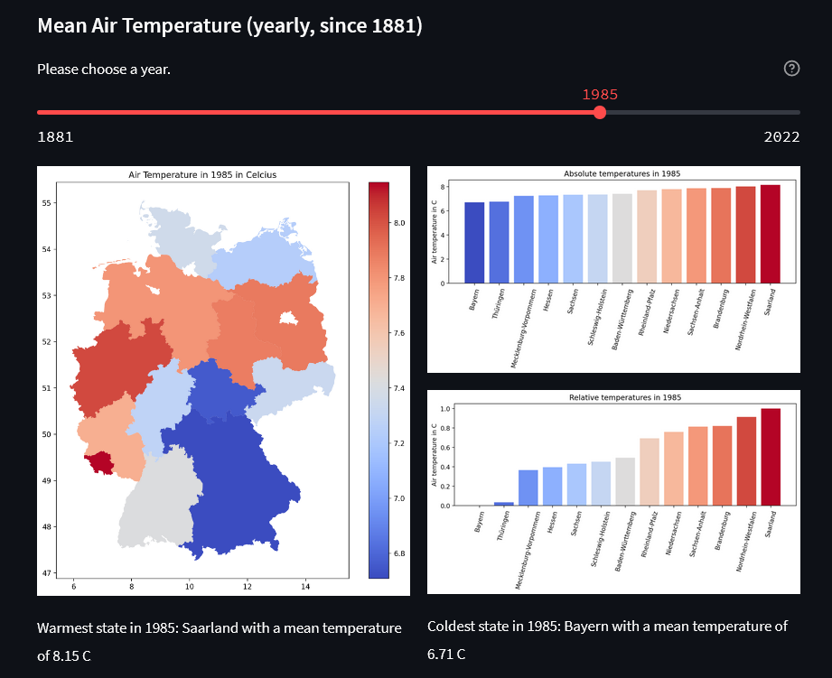

Project 1: Historical weather data analysis
Link to App

This streamlit app is based on publicly free available weather data from the German Meteorological Service (Deutscher Wetterdienst) and a shapefile from the German Federal Agency for Cartography and Geodesy (Bundesamt für Kartographie und Geodäsie). It offers an interactive visualization of weather data from the different german states, in terms of air temperature, precipitation and sunshine duration. The main purpose of this project was to test the python libraries geopandas in combination with the visualization library matplotlib and streamlit.
def median(pool):
'''Statistical median to demonstrate doctest.
>>> median([2, 9, 9, 7, 9, 2, 4, 5, 8])
7
'''
copy = sorted(pool)
size = len(copy)
if size % 2 == 1:
return copy[(size - 1) / 2]
else:
return (copy[size/2 - 1] + copy[size/2]) / 2
if __name__ == '__main__':
import doctest
doctest.testmod()